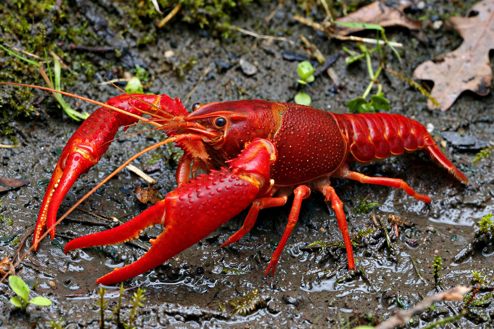

Crawfish are freshwater crustaceans belonging to the infraorder Astacidea, which also includes lobsters. They are known by many regional names including crayfish, crawdads, mudbugs, and yabbies. Crawfish are closely related to the lobster; there are more than 640 species worldwide, with the greatest diversity in southeastern North America and Australia. They live in streams, rivers, swamps, wetlands, and irrigation ditches, and generally cannot tolerate polluted water.
| Crawfish | |
|---|---|
 | |
| Infraorder | Astacidea |
| Superfamilies | Astacoidea, Parastacoidea |
| Species | 640+ |
| Habitat | Freshwater streams, swamps, wetlands |
Like other decapod crustaceans, crawfish have a segmented body with a cephalothorax protected by a carapace, five pairs of walking legs — the first modified into large claws (chelae) — and a muscular abdomen ("tail") ending in a fan. They breathe through feather-like gills. Many species burrow, constructing mud chimneys at the entrances of their tunnels. Crawfish are omnivores, eating plants, detritus, snails, insects, and small fish, and they are in turn preyed upon by fish, birds, raccoons, and humans. Some species, such as the red swamp crawfish (Procambarus clarkii), have become invasive where introduced.
Crawfish are eaten worldwide. In Louisiana, where the red swamp crawfish and the white river crawfish are farmed in flooded rice-field ponds, the crawfish boil is a celebrated social meal: live crawfish are boiled in heavily seasoned water (cayenne, lemon, garlic, bay leaf) with corn, potatoes, and sausage, then dumped onto newspaper-covered tables. Crawfish feature in Creole and Cajun dishes such as crawfish étouffée, crawfish bisque, and crawfish pie. In Sweden, the kräftskiva (crayfish party) is a traditional late-summer celebration. Only a small portion of the crawfish's body is edible — mainly the tail meat, and the fat-rich hepatopancreas prized by enthusiasts.
Louisiana supplies most of the crawfish consumed in the United States, farming them in rotation with rice. China has become the world's largest producer and exporter of crawfish meat.